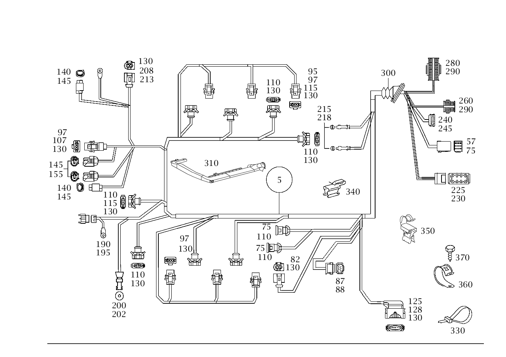

| № | Артикул | Название | Кол. | Примечание | Ограничение |
|---|---|---|---|---|---|
| 5 | A 170 540 41 07 | ЖГУТ ЭЛ.-ПРОВОДКИ | - | Рулевое управление: Влево [025] ИСПОЛЬЗОВАТЬ СТАРЫЙ НОМЕР ДЕТАЛИ ДО ДВИГАТЕЛЯ 31 193290 | |
| 5 | A 170 540 94 08 | Жгут электропроводки (LEITUNGSSATZ) | 1 | ЖГУТ ЭЛЕКТРОПРОВОДКИ ДВИГАТЕЛЯ Рулевое управление: Влево | |
| 5 | A 170 540 42 07 | ЖГУТ ЭЛ.-ПРОВОДКИ | - | Рулевое управление: Вправо [025] ИСПОЛЬЗОВАТЬ СТАРЫЙ НОМЕР ДЕТАЛИ ДО ДВИГАТЕЛЯ 31 193290 | |
| 5 | A 170 540 95 08 | Жгут электропроводки (LEITUNGSSATZ) | 1 | ЖГУТ ЭЛЕКТРОПРОВОДКИ ДВИГАТЕЛЯ Рулевое управление: Вправо | |
| 57 | A 220 545 94 28 | - Корпус (GEHAEUSE) | 1 | БЛОК УПРАВЛ.ДВИГАТ.; 9\-PIN | |
| 70 | A 094 545 49 01 | - Корпус штекера (STECKERGEHAEUSE) | 2 | ДАТЧИК ДЕТОНАЦ. СГОРАНИЯ TO 170 540 41 07/42 07; 2\-PIN [025] ИСПОЛЬЗОВАТЬ СТАРЫЙ НОМЕР ДЕТАЛИ ДО ДВИГАТЕЛЯ 31 193290 | |
| 75 | A 011 545 81 26 | - Контактная пружина (FEDERSTECKER) | NB | 0.5\-1.0 mm2; 0.5\-1.0 MM2 JPT | |
| 77 | A 013 545 15 26 | - Контактная втулка (KONTAKTBUCHSE) | NB | 0.5\-1.0 mm2; 0.5\-0.75 MM2 SLK2.8 | |
| 82 | A 168 545 30 28 | - Корпус штекерной втулки (STECKHUELSENGEHAEUSE) | 1 | ДАТЧИК ПОЛОЖЕНИЯ КОЛЕН.ВАЛА; 2\-PIN COD.B;SLK2.8 | |
| 87 | A 210 540 36 81 | - Сцепление, механическое (KUPPLUNG, MECHANISCH) | 1 | СЕРВОМЕХАНИЗМ РЕГУЛИРОВКИ Х.Х.; 6\-PIN MQS | |
| 88 | A 013 545 46 26 | - Контактная втулка (KONTAKTBUCHSE) | - | 0.5\-0.75 MM2 MQS ELA | |
| 88 | A 000 540 26 05 | - Электрический провод (ELEKTRISCHE LEITUNG) | NB | РЕМОНТНОЕ РЕШЕНИЕ ДЛЯ КОНТАКТОВ 0.75mm2; 0.75 MM2 MQS [774] СОЕДИНИТЕЛИ ДОЛЖНЫ БЫТЬ ЗАКАЗАНЫ В СООТВЕТСТВИИ С ОБЩИМ СЕЧЕНИЕМ ПРОВОДОВ. РУКОВОДСТВО ПО РЕМОНТУ СМ. WIS КОНЦЕВ. СПАЕЧНЫЕ ГИЛЬЗЫ: A 001 546 99 41 ЗЕЛЁНЫЙ 0,7-2,4 MM2 A 002 546 00 41 КРАСНЫЙ 2,0 - 4,0 MM2 A 002 546 01 41 СИНИЙ 3,5 - 8,0 MM2 A 002 546 11 41 ЖЁЛТЫЙ 7,5 - 12,0 MM2 СОЕДИНИТЕЛИ В СТЫК: A 002 546 13 41 0,5 MM2 A 002 546 14 41 0,8 MM2 A 002 546 15 41 1,3 MM2 A 002 546 16 41 2,0 MM2 | |
| 95 | A 210 540 80 81 | - Корпус штекерной втулки (STECKHUELSENGEHAEUSE) | - | 3\-PIN [025] ИСПОЛЬЗОВАТЬ СТАРЫЙ НОМЕР ДЕТАЛИ ДО ДВИГАТЕЛЯ 31 193290 | |
| 97 | A 203 545 30 28 | - Штекер (STECKER) | 6 | КАТУШКА ЗАЖИГ.; 3\-PIN SLK2.8 | |
| 97 | A 203 545 30 28 | - Штекер (STECKER) | 1 | ДАТЧИК ПОЛОЖЕНИЯ РАСПРЕД.ВАЛА; 3\-PIN SLK2.8 | |
| 107 | A 000 545 25 84 | - Защитный колпачок (ABDECKKAPPE) | 1 | ДАТЧИК ПОЛОЖЕНИЯ РАСПРЕД.ВАЛА | |
| 110 | A 203 545 05 28 | - Штекер (STECKER) | 6 | ФОРСУНКА; 2\-PIN SLK2.8 | |
| 110 | A 203 545 05 28 | - Штекер (STECKER) | 2 | ДАТЧИК ДЕТОНАЦ. СГОРАНИЯ; 2\-PIN SLK2.8 | |
| 110 | A 140 545 35 28 | - Корпус штекерной втулки (STECKHUELSENGEHAEUSE) | - | 2 PIN JPT [025] ИСПОЛЬЗОВАТЬ СТАРЫЙ НОМЕР ДЕТАЛИ ДО ДВИГАТЕЛЯ 31 193290 | |
| 110 | A 203 545 05 28 | - Штекер (STECKER) | 1 | ВПУСКНОЙ КОЛЛЕКТОР; 2\-PIN SLK2.8 | |
| 110 | A 203 545 34 28 | - Штекер (STECKER) | 1 | ЭЛЕМЕНТ ВАКУУМНЫЙ; 2\-PIN | |
| 115 | A 000 540 46 15 | - Контактная пружина (FEDERSTECKER) | - | 0.5\-1.0 MM2 JPT | |
| 115 | A 000 540 27 05 | - Электрический провод (ELEKTRISCHE LEITUNG) | NB | РЕМОНТНОЕ РЕШЕНИЕ ДЛЯ КОНТАКТОВ 1.0MM2,;TO 210 540 80 81/140 545 35 28; 0.5\-1.00 MM2 JPT [774] СОЕДИНИТЕЛИ ДОЛЖНЫ БЫТЬ ЗАКАЗАНЫ В СООТВЕТСТВИИ С ОБЩИМ СЕЧЕНИЕМ ПРОВОДОВ. РУКОВОДСТВО ПО РЕМОНТУ СМ. WIS КОНЦЕВ. СПАЕЧНЫЕ ГИЛЬЗЫ: A 001 546 99 41 ЗЕЛЁНЫЙ 0,7-2,4 MM2 A 002 546 00 41 КРАСНЫЙ 2,0 - 4,0 MM2 A 002 546 01 41 СИНИЙ 3,5 - 8,0 MM2 A 002 546 11 41 ЖЁЛТЫЙ 7,5 - 12,0 MM2 СОЕДИНИТЕЛИ В СТЫК: A 002 546 13 41 0,5 MM2 A 002 546 14 41 0,8 MM2 A 002 546 15 41 1,3 MM2 A 002 546 16 41 2,0 MM2 [025] ИСПОЛЬЗОВАТЬ СТАРЫЙ НОМЕР ДЕТАЛИ ДО ДВИГАТЕЛЯ 31 193290 | |
| 125 | A 220 545 46 28 | - Штекер (STECKER) | 1 | РАСХОДОМЕР ВОЗДУХА; 5\-PIN SLK2.8 | |
| 128 | A 000 545 31 84 | - Защитный колпачок (ABDECKKAPPE) | 1 | 5\-PIN | |
| 130 | A 009 545 81 26 | - Контактная втулка (KONTAKTBUCHSE) | - | 0.5\-0.75 MM2 SLK2.8 | |
| 130 | A 000 540 38 05 | - Электрический провод (ELEKTRISCHE LEITUNG) | NB | РЕМОНТНОЕ РЕШЕНИЕ ДЛЯ КОНТАКТОВ 0.75mm2; 0.75 MM2 SLK2.8 [774] СОЕДИНИТЕЛИ ДОЛЖНЫ БЫТЬ ЗАКАЗАНЫ В СООТВЕТСТВИИ С ОБЩИМ СЕЧЕНИЕМ ПРОВОДОВ. РУКОВОДСТВО ПО РЕМОНТУ СМ. WIS КОНЦЕВ. СПАЕЧНЫЕ ГИЛЬЗЫ: A 001 546 99 41 ЗЕЛЁНЫЙ 0,7-2,4 MM2 A 002 546 00 41 КРАСНЫЙ 2,0 - 4,0 MM2 A 002 546 01 41 СИНИЙ 3,5 - 8,0 MM2 A 002 546 11 41 ЖЁЛТЫЙ 7,5 - 12,0 MM2 СОЕДИНИТЕЛИ В СТЫК: A 002 546 13 41 0,5 MM2 A 002 546 14 41 0,8 MM2 A 002 546 15 41 1,3 MM2 A 002 546 16 41 2,0 MM2 | |
| 140 | A 210 540 21 81 | - Сцепление, механическое (KUPPLUNG, MECHANISCH) | 1 | ДАТЧИК МАСЛА; 3\-PIN MQS | |
| 140 | A 210 540 21 81 | - Сцепление, механическое (KUPPLUNG, MECHANISCH) | 1 | ВПУСК. КОЛЛЕКТОР, ДАТЧИК ДАВЛ.; 3\-PIN MQS | |
| 145 | A 008 545 63 26 | - Контактная втулка (KONTAKTBUCHSE) | - | 0.5\-0.75 MM2 MQS ELA | |
| 145 | A 000 540 25 05 | - Электрический провод (ELEKTRISCHE LEITUNG) | NB | РЕМОНТНОЕ РЕШЕНИЕ ДЛЯ КОНТАКТОВ 0.5 MM2; 0.5 MM2 MQS [774] СОЕДИНИТЕЛИ ДОЛЖНЫ БЫТЬ ЗАКАЗАНЫ В СООТВЕТСТВИИ С ОБЩИМ СЕЧЕНИЕМ ПРОВОДОВ. РУКОВОДСТВО ПО РЕМОНТУ СМ. WIS КОНЦЕВ. СПАЕЧНЫЕ ГИЛЬЗЫ: A 001 546 99 41 ЗЕЛЁНЫЙ 0,7-2,4 MM2 A 002 546 00 41 КРАСНЫЙ 2,0 - 4,0 MM2 A 002 546 01 41 СИНИЙ 3,5 - 8,0 MM2 A 002 546 11 41 ЖЁЛТЫЙ 7,5 - 12,0 MM2 СОЕДИНИТЕЛИ В СТЫК: A 002 546 13 41 0,5 MM2 A 002 546 14 41 0,8 MM2 A 002 546 15 41 1,3 MM2 A 002 546 16 41 2,0 MM2 | |
| 155 | A 210 540 20 81 | - Корпус штекерной втулки (STECKHUELSENGEHAEUSE) | 1 | ДАТЧИК ТЕМПЕРАТУРЫ ОХЛАЖДАЮЩЕЙ ЖИДКОСТИ; 2\-PIN MQS | |
| 155 | A 210 540 20 81 | - Корпус штекерной втулки (STECKHUELSENGEHAEUSE) | 1 | ВОЗДУШНЫЙ НАСОС; 2\-PIN MQS | |
| 190 | A 011 545 71 28 | - Корпус штекерной втулки (STECKHUELSENGEHAEUSE) | 1 | ПРОДУВКА КАТАЛИЗАТОРА; 2\-PIN | |
| 195 | A 003 545 26 26 | - Контактная втулка (KONTAKTBUCHSE) | 2 | 4 MM2; 0.35\-4.0 MM2 RK4 | |
| 200 | A 202 540 71 81 | - Сцепление, механическое (KUPPLUNG, MECHANISCH) | 1 | КОМПРЕСС. КОНДИЦИОНЕРА; 1\-PIN | |
| 202 | A 009 545 21 26 | - Контактная втулка (KONTAKTBUCHSE) | - | 0.5\-1.0 MM2 RK2.5 | |
| 202 | A 000 540 32 05 | - Электрический жгут (ELEKTRISCHER LEITUNGSSATZ) | 1 | РЕМОНТНОЕ РЕШЕНИЕ ДЛЯ КОНТАКТОВ 1.0 MM2; 1.0 MM2 [774] СОЕДИНИТЕЛИ ДОЛЖНЫ БЫТЬ ЗАКАЗАНЫ В СООТВЕТСТВИИ С ОБЩИМ СЕЧЕНИЕМ ПРОВОДОВ. РУКОВОДСТВО ПО РЕМОНТУ СМ. WIS КОНЦЕВ. СПАЕЧНЫЕ ГИЛЬЗЫ: A 001 546 99 41 ЗЕЛЁНЫЙ 0,7-2,4 MM2 A 002 546 00 41 КРАСНЫЙ 2,0 - 4,0 MM2 A 002 546 01 41 СИНИЙ 3,5 - 8,0 MM2 A 002 546 11 41 ЖЁЛТЫЙ 7,5 - 12,0 MM2 СОЕДИНИТЕЛИ В СТЫК: A 002 546 13 41 0,5 MM2 A 002 546 14 41 0,8 MM2 A 002 546 15 41 1,3 MM2 A 002 546 16 41 2,0 MM2 | |
| 208 | A 168 545 29 28 | - Корпус штекерной втулки (STECKHUELSENGEHAEUSE) | 1 | ГЕНЕРАТОР; 2\-PIN SLK2.8 | |
| 213 | A 000 545 79 80 | - Заглушка (BLINDSTOPFEN) | NB | 4.0 MM MLK1.2 LKS1.5 | |
| 215 | A 001 540 24 81 | - Штекер (STECKER) | 2 | ЗОНД O2, ЧЕРН. | |
| 218 | A 032 545 54 28 | - Контактный стержень (KONTAKTSTIFT) | - | 0.5\-1.0 mm2 | |
| 218 | A 000 540 42 05 | - Электрический провод (ELEKTRISCHE LEITUNG) | NB | РЕМОНТНОЕ РЕШЕНИЕ ДЛЯ КОНТАКТОВ 1.0 MM2; 1.0 MM2 LKS 1.5 [774] СОЕДИНИТЕЛИ ДОЛЖНЫ БЫТЬ ЗАКАЗАНЫ В СООТВЕТСТВИИ С ОБЩИМ СЕЧЕНИЕМ ПРОВОДОВ. РУКОВОДСТВО ПО РЕМОНТУ СМ. WIS КОНЦЕВ. СПАЕЧНЫЕ ГИЛЬЗЫ: A 001 546 99 41 ЗЕЛЁНЫЙ 0,7-2,4 MM2 A 002 546 00 41 КРАСНЫЙ 2,0 - 4,0 MM2 A 002 546 01 41 СИНИЙ 3,5 - 8,0 MM2 A 002 546 11 41 ЖЁЛТЫЙ 7,5 - 12,0 MM2 СОЕДИНИТЕЛИ В СТЫК: A 002 546 13 41 0,5 MM2 A 002 546 14 41 0,8 MM2 A 002 546 15 41 1,3 MM2 A 002 546 16 41 2,0 MM2 | |
| 225 | A 029 545 19 28 | - Сцепление, механическое (KUPPLUNG, MECHANISCH) | 1 | РАЗЪЕМ БЛОКА БУ/ДВИГ.; 8\-PIN RK2.5 | |
| 230 | A 009 545 28 26 | - Контактная втулка (KONTAKTBUCHSE) | NB | 0.5\-1.0 mm2; 0.5\-1.0 MM2 RK2.5 | |
| 230 | A 009 545 29 26 | - Контактная втулка (KONTAKTBUCHSE) | NB | 1.0\-2.5 mm2; 1.1\-2.5 MM2 RK2.5 | |
| 240 | A 027 545 74 28 | - Корпус штекерной втулки (STECKHUELSENGEHAEUSE) | 1 | БЛОК РЕЛЕ; 4\-PIN | |
| 245 | A 002 545 99 26 | - Контактная втулка (KONTAKTBUCHSE) | NB | 2.5 MM2; 0.35\-2.5 MM2 RK2.5 | |
| 245 | A 003 545 26 26 | - Контактная втулка (KONTAKTBUCHSE) | NB | 4.0mm2; 0.35\-4.0 MM2 RK4 | |
| 260 | A 168 545 07 28 | - Корпус штекера (STECKERGEHAEUSE) | 1 | СИСТЕМА УПРАВЛЕНИЯ ДВИГАТЕЛЕМ; 24 PIN MQS | |
| 280 | A 168 545 08 28 | - Сцепление, механическое (KUPPLUNG, MECHANISCH) | 1 | СИСТЕМА УПРАВЛЕНИЯ ДВИГАТЕЛЕМ; 52 PIN MQS | |
| 290 | A 008 545 55 26 | - Контактная втулка (KONTAKTBUCHSE) | - | 0.5\-0.75 MM2 MQS | |
| 290 | A 000 540 46 05 | - Электрический провод (ELEKTRISCHE LEITUNG) | NB | РЕМОНТНОЕ РЕШЕНИЕ ДЛЯ КОНТАКТОВ 0.75mm2; 0.75 MM2 MQS SN [774] СОЕДИНИТЕЛИ ДОЛЖНЫ БЫТЬ ЗАКАЗАНЫ В СООТВЕТСТВИИ С ОБЩИМ СЕЧЕНИЕМ ПРОВОДОВ. РУКОВОДСТВО ПО РЕМОНТУ СМ. WIS КОНЦЕВ. СПАЕЧНЫЕ ГИЛЬЗЫ: A 001 546 99 41 ЗЕЛЁНЫЙ 0,7-2,4 MM2 A 002 546 00 41 КРАСНЫЙ 2,0 - 4,0 MM2 A 002 546 01 41 СИНИЙ 3,5 - 8,0 MM2 A 002 546 11 41 ЖЁЛТЫЙ 7,5 - 12,0 MM2 СОЕДИНИТЕЛИ В СТЫК: A 002 546 13 41 0,5 MM2 A 002 546 14 41 0,8 MM2 A 002 546 15 41 1,3 MM2 A 002 546 16 41 2,0 MM2 | |
| 300 | A 202 997 29 81 | - втулка (TUELLE) | 1 | 16 MM | |
| 310 | A 000 546 02 80 | - Кабельная направляющая (LEITUNGFUEHRUNG) | - | [402] БОЛЬШЕ НЕ ПОСТАВЛЯЕТСЯ [025] ИСПОЛЬЗОВАТЬ СТАРЫЙ НОМЕР ДЕТАЛИ ДО ДВИГАТЕЛЯ 31 193290 | |
| 310 | A 230 546 12 80 | - Кабельная направляющая (LEITUNGFUEHRUNG) | 1 | [402] БОЛЬШЕ НЕ ПОСТАВЛЯЕТСЯ | |
| 320 | A 001 546 99 41 | Соединитель проводов (LEITUNGSVERBINDER) | NB | ЗЕЛЕНЫЙ 0.7\-2.4 MM2; 0.7 \- 2.4 MM2 | |
| 320 | A 002 546 00 41 | Соединитель проводов (LEITUNGSVERBINDER) | NB | КРАСНЫЙ 2.0\-4.0 MM2; 2.0 \- 4.0 MM2 | |
| 320 | A 002 546 01 41 | Соединитель проводов (LEITUNGSVERBINDER) | NB | СИНИЙ 3.5\-8.0 MM2; 3.5 \- 8.0 MM2 | |
| 320 | A 002 546 11 41 | Соединитель проводов (LEITUNGSVERBINDER) | NB | ЖЕЛТЫЙ 7.5\-12.0 MM2; 7.5 \- 12.0 MM2 | |
| 325 | A 002 546 13 41 | Соединитель проводов (LEITUNGSVERBINDER) | NB | 0.5 MM2; 0.5 MM2 | |
| 325 | A 002 546 14 41 | Соединитель проводов (LEITUNGSVERBINDER) | NB | 0.8 MM2; 0.8 MM2 | |
| 325 | A 002 546 15 41 | Соединитель проводов (LEITUNGSVERBINDER) | NB | 1.3 MM2; 1.3 MM2 | |
| 325 | A 002 546 16 41 | Соединитель проводов (LEITUNGSVERBINDER) | NB | 2.0 MM2; 2.0 MM2 | |
| 330 | A 001 997 83 90 | Кабельная стяжка | NB | 4.6X279 MM | |
| 340 | A 220 546 18 43 | Держатель (HALTER) | 1 | ||
| 350 | A 000 995 44 14 | Держатель (HALTER) | 1 | К КРЫШКЕ ГАЗОРАСПРЕД.МЕХАНИЗМА | |
| 360 | A 001 995 85 01 | хомут (SCHELLE) | 1 | ШИНА КАБЕЛЯ НА ДЕРЖАТ. | |
| 370 | N 007976 004302 | Шуруп | 1 | ШИНА КАБЕЛЯ НА ДЕРЖАТ. |
Позиций: 69 · подписано на схемах: 69 · колесо — плавный зум в курсор, перетаскивание — пан, двойной клик — зум, клик по артикулу — скопировать · наведите на строку или цифру на схеме — подсветка связки, клик — закрепить.